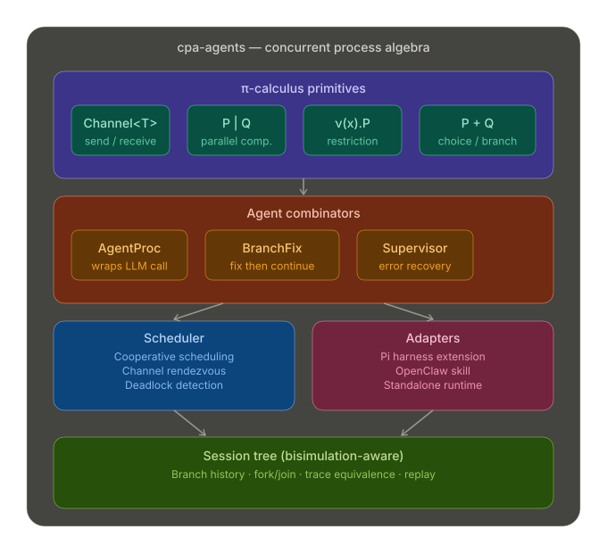

π-calculus core
Channels, parallel composition, external choice, scoped names, and replication — mapped to agent tasks.
cpa-agents applies concurrent process algebra to AI agent orchestration. Three layers — process algebra, fork algebra, and operator algebra — provide typed primitives for parallelism, communication, fix-and-resume branching, and provenance-aware workflows.
Channels, parallel composition, external choice, scoped names, and replication — mapped to agent tasks.
Drop-in extensions for Pi Coding Agent and OpenClaw.
Every run emits a hierarchical execution tree and flat trace — exportable as JSONL or Markdown.
npm install cpa-agentsZero runtime dependencies. TypeScript types ship with the package.
Run two agent tasks in parallel with a shared scheduler:
import { Scheduler, par, agentProcess } from "cpa-agents";
const scheduler = new Scheduler({ timeout: 60_000 });
const research = par(
agentProcess(webSearchAgent, "latest React patterns"),
agentProcess(codeSearchAgent, "auth middleware examples"),
);
const result = await scheduler.run("research", research);
console.log(result.sessionTree);
Core runtime mapped from π-calculus:
| π-calculus | cpa-agents | What it does |
|---|---|---|
ā⟨v⟩.P |
ch.send(v) |
Send value on channel, then continue |
a(x).P |
ch.receive() |
Receive value from channel, then continue |
P | Q |
par(P, Q) |
Run P and Q concurrently |
P + Q |
choice([...]) |
Wait for first channel that fires |
ν(x).P |
restrict(name, body) |
Create a fresh scoped channel |
!P |
replicate(trigger, handler) |
Spawn new P for each incoming message |
Key exports: Channel, select, par, seq, choice, branchFix, restrict, replicate, supervisor, Scheduler.
Pattern for run → detect error → fix → resume:
import { branchFix, Scheduler } from "cpa-agents";
const workflow = branchFix<string>({
name: "implement-feature",
maxFixes: 3,
main: (requestFix) => async (ctx) => {
const code = await coder.invoke("add auth middleware", ctx.signal);
const check = await linter.invoke(code, ctx.signal);
if (!check.pass) {
await requestFix(check.errors.join("; "));
}
return code;
},
fix: (reason) => async (ctx) => {
await fixer.invoke(reason, ctx.signal);
},
});
const scheduler = new Scheduler({ timeout: 60_000 });
const result = await scheduler.run("feature", workflow);Relational composition and paired derivations over the same input:
import { rel, fork, compose, meet, join, toProcess } from "cpa-agents";
const parse = rel("parse", async (input: string) => [input.trim()]);
const enrich = rel("enrich", async (input: string) => [`${input}:meta`]);
const validate = rel("validate", async (input: string) =>
[input.length > 0 ? "ok" : "bad"]
);
const composed = compose(parse, enrich);
const paired = fork(enrich, validate);
const proc = toProcess(composed, "task payload", "all");Key exports: rel, detRel, compose, fork, forkN, converse, meet, join, toProcess, forkToProcess, verifyAxioms.
Shell-style and reliability-focused control flow:
import {
and, or, pipe, saga, invertible,
retryWithBackoff, timeout,
} from "cpa-agents";
const guardedDeploy = and(buildProcess, deployProcess);
const withFallback = or(primaryProcess, fallbackProcess);
const piped = pipe(fetchProcess, (data) => transformProcess(data));
const transactional = saga([
invertible(createBranch, deleteBranch),
invertible(writeChanges, revertChanges),
invertible(runChecks, cleanupChecks),
]);
const resilient = retryWithBackoff({
process: timeout(30_000, transactional),
maxAttempts: 3,
});import { createOpenClawSkill } from "cpa-agents/adapters/openclaw";
export default createOpenClawSkill();| Command | Description |
|---|---|
cpa:parallel | Run independent tasks concurrently |
cpa:branch-fix | Run, detect errors, fix, continue |
cpa:fan-out | Same task across multiple models |
cpa:retry | Exponential backoff retries |
cpa:fallback | Primary with fallback on failure |
cpa:saga | Transactional workflow with compensating actions |
cpa:status | Inspect scheduler state and session tree |
Skill authoring reference: skills/cpa-agents/SKILL.md in the repository.
Pi upstream: earendil-works/pi. The adapter targets the extension API and expects piCtx.agent.run(task).
import { createPiCpaExtension } from "cpa-agents/adapters/pi";
export default createPiCpaExtension();Extension commands: cpa:par, cpa:fix, cpa:tree, cpa:retry, cpa:fallback, cpa:saga, cpa:fan-out.
import { configurePiBridge, piSubAgent } from "cpa-agents/adapters/pi";
configurePiBridge({
runSubAgent: async ({ prompt }, signal) => host.run(prompt, { signal }),
runTool: async ({ tool, args }, signal) => host.runTool(tool, args, { signal }),
});Every scheduler run emits a hierarchical sessionTree and flat trace. Persist traces as Pi-compatible JSONL:
import { Scheduler, loadJsonlTree, eventsToSessionTree } from "cpa-agents";
const scheduler = new Scheduler();
const sink = scheduler.attachJsonl("./session.jsonl");
const result = await scheduler.run("workflow", myProcess);
await sink.close();
const tree = await loadJsonlTree("./session.jsonl");
// or: eventsToSessionTree(result.trace.events)| Import path | Primary exports |
|---|---|
cpa-agents |
Process algebra, fork algebra, operators, scheduler, JSONL utilities |
cpa-agents/adapters/pi |
createPiCpaExtension, configurePiBridge, piSubAgent |
cpa-agents/adapters/openclaw |
createOpenClawSkill, configureOpenClawBridge |
Machine-readable metadata: openapi-like.json
# Typecheck
npm run check
# Run tests (93+ cases, ~96% coverage)
npm test
# Coverage gate
npm run coverage
# Build
npm run build
# Serve docs locally
npm run docs:serve